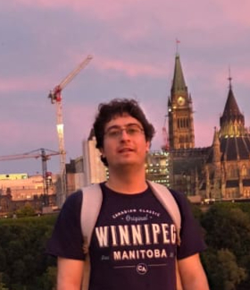

PhD Student – University of Ottawa
I am a first year Mathematics PhD student at University of Ottawa, working on elliptic curves under the supervision of Antonio Lei and Payman Eskandari.
I worked as a senior research assistant under the supervision of Payman Eskandari at University of Winnipeg between September 2024 - July 2025.
My research lies in algebraic number theory and mainly focuses on torsion groups of elliptic curves.
I am interested in rational points on curves, elliptic curves, torsion groups, modular curves and Galois representations.
My master's thesis under the supervision of Ekin Özman focuses on classifying torsion subgroups of rational elliptic curves over cyclotomic fields.
I enjoy solving olympiad number theory problems when I get the chance.
I completed double major BSc in Electrical & Electronics Engineering and Mathematics at Boğaziçi University (2021).